Keraton
|
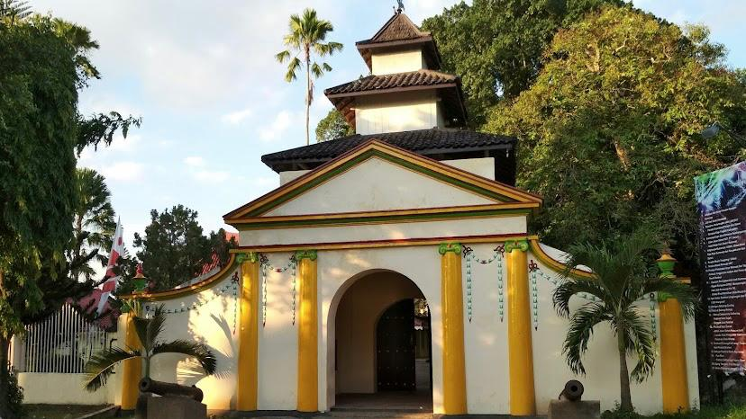
Labang Mesem
/. Pintu tersenyum
Gerbang utama menuju keraton. Tepat di sebelah timur pendopo ada arca yang berbentuk seseorang yang tersenyum. Arca tersebut terlihat tepat lurus dari luar pintu gerbang keraton. |
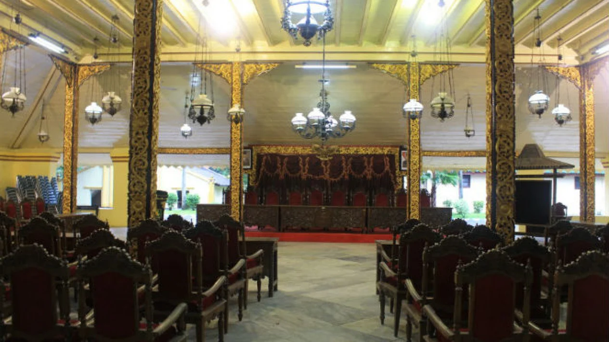
Pendopo
Tempat menyambut tamu-tamu besar yang berkunjung ke Sumenep, pun tempat digelar pertemuan penting dan acara budaya.
|
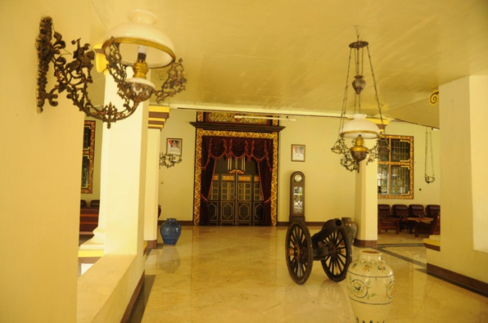
Gedung Utama
Tempat istirahat para Adipati dan digunakan untuk melakukan kegiatan pemerintahan
|
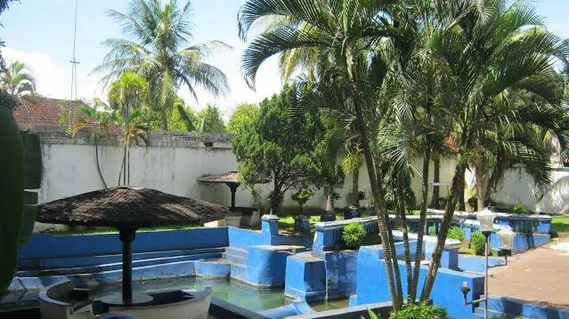
Taman Sare
Pemandian putri Adipati. Memilki 3 pintu air yang konon memiliki khasiatnya sendiri.
|
Asta Tinggi
| 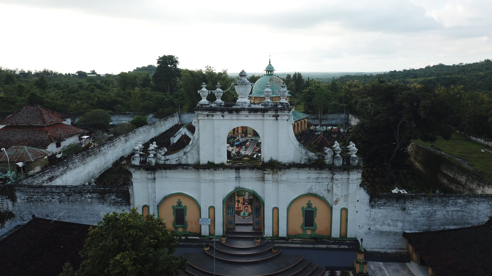 |
Asta Tinggi merupakan komplek pemakaman para Raja Sumenep beserta keturunannya.
Dibangun sejak abad 17 berjarak 2,5 km dari arah barat Keraton Sumenep. Disebut Tinggi karena berada di daerah tinggi perbukitan Sumenep. Asta diartikan sebagai makam dalam Bahasa Madura. Banyak wisatawan berkunjung untuk berziarah. |
Masjid Jamik
| 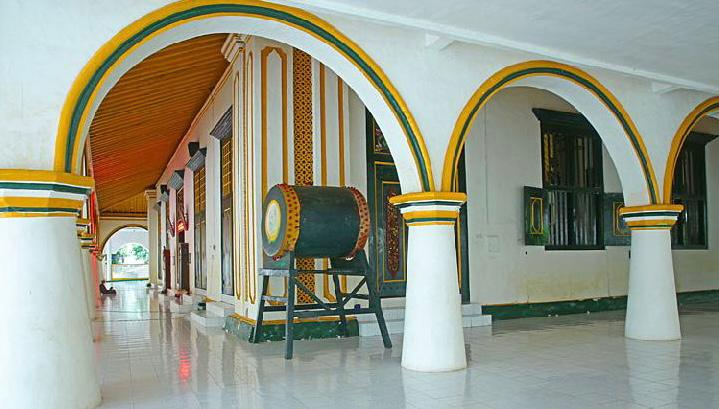 | 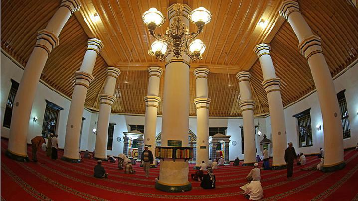 | 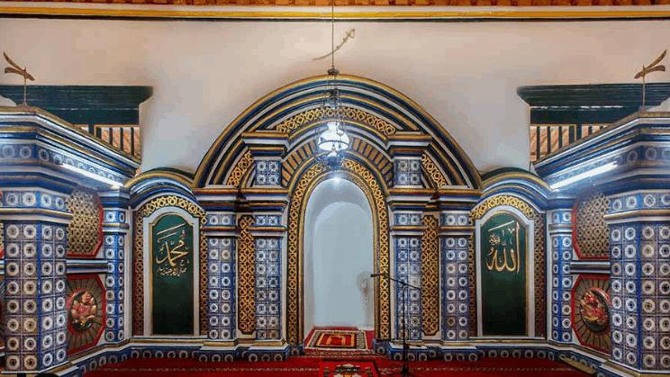 |
Kota Tua Kalianget
| 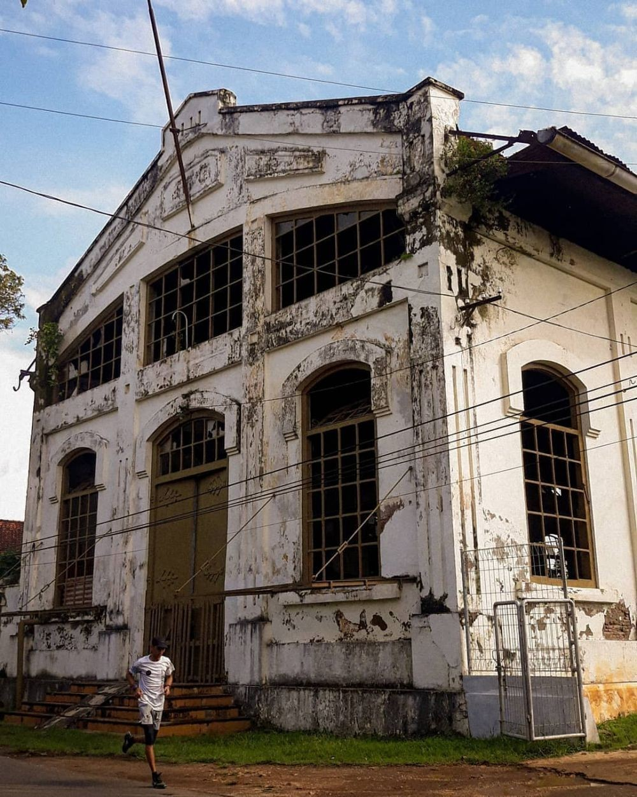 |
Kota Tua Kalianget merupakan salah satu kota modern pertama di Pulau Madura, Kota ini di bangun pada masa VOC dan diteruskan oleh pemerintahan Hindia Belanda. Kalianget di kembangkan menjadi kota dikarenakan letaknya yang sangat strategis dan merupakan bandar pelabuhan tersibuk di selat Madura. Pelabuhan tertua di Sumenep adalah pelabuhan Kertasada, lataknya sekitar 10 km dari pusat kota Sumenep. Ketika Sumenep jatuh ke tangan VOC pada tahun 1705, VOC mulai membangun sebuah benteng yang terletak di Kalianget barat, namun dikarenakan posisinya yang kurang strategis dan berbatasan langsung dengan laut selat Madura, Benteng tersebut urung dibangun, maka oleh masyarakat sekitar daerah tersebut dikenal dengan nama "Loji Kantang" .
|
| 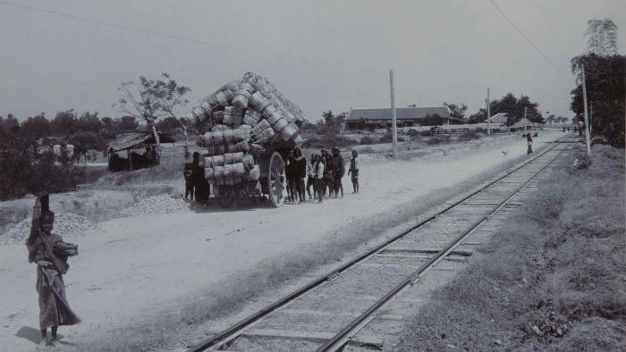 | 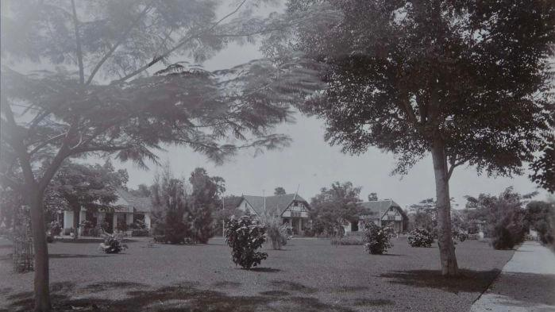 | 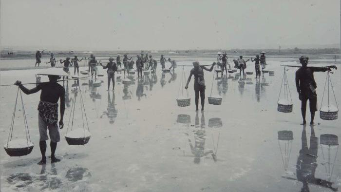 | 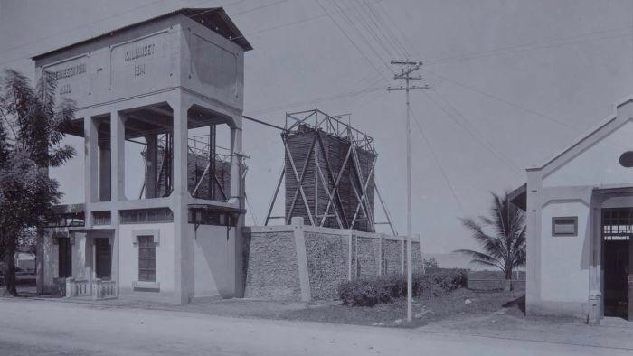 |